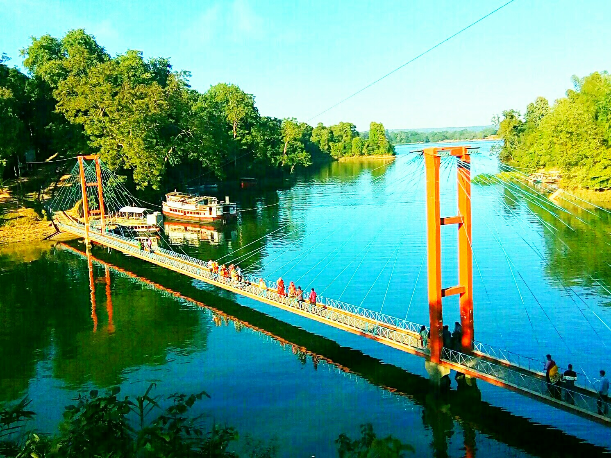
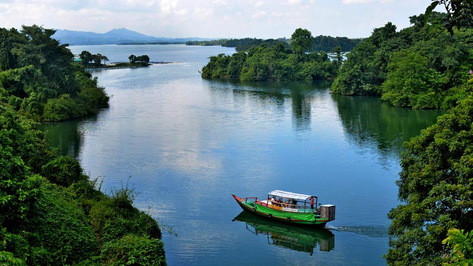

BandarbanThe India - Myanmar Sabroom - Cox's Bazar railway link has been proposed to connect Sabroom - Khargachari - Rangamati - Bandarban - Satkania - Cox's Bazar and another rail link connecting Bandarban to Tuipang, India.
Bandarban lies, by bus, eight hours away from Dhaka, two hours from Chittagong and three hours from Cox's Bazar. It is also possible to get there by a six-hour bus ride from Rangamati. The Buddha Dhatu Jadi, the Buddhist temple in Bangladesh, located in Balaghata, 4 km from the town. This place attracts many tourists every year. This Theravada Buddhist temple is made completely in the style of South-East Asia and houses the second largest statue of the Buddha in Bangladesh. The waterfall named Shoilo Propat at Milanchari is another place tourists like to visit. The numerous Buddhist temples, known as kyang in local tongue, and bhihars in the town include the highly notable the Rajvihar (royal vihar) at Jadipara and the Ujanipara Bhihar. Bawm villages around Chimbuk, and Mru villages a little further off, are also lie within a day's journey from the town. Prantik Lake, Jibannagar and Kyachlong Lake are some more places of interest. Boat ride on the river Shangu is one of the main attractions here for tourists.
Rangamati

Rangamati
Rangamati (Bengali: রাঙ্গামাটি;) is the administrative headquarter and town of Rangamati Hill District in the Chittagong Hill Tracts of Bangladesh. The town is located at 22°37'60N 92°12'0E and has an altitude of 14 metres (46 ft).[1] It is also where Ropuiliani, a Mizo chieftess, was jailed and died, during the British rule in Mizoram.[2][3]
From Chittagong a 77 kilometres (48 mi) road leads to Rangamati. The township is located on the western bank of the Kaptai lake. Rangamati is a holiday destination because of its landscape, scenery, lake, indigenous groups (Chakma, Marma, Mizo, Tripuri, Tanchangya, etc.), flora and fauna, indigenous museum and hanging bridge.
Kaptai

Kaptai
Construction of the reservoir for the hydro-electric plant began in 1956 by the Government of East Pakistan.[2] As a result, 54,000 acres (220 km2) of farmland in the Rangamati District went underwater and created the lake. The project was finished in 1961.[3] 40% of the total arable land went underwater as a result of the dam construction and 100,000 people were displaced.[3] The palace of the king of the Chakmas was also flooded and is also underwater.[2] The International Engineering Company and Utah International Inc. received the contract for construction of the dam. The dam is 670.8 meters long, and 54.7 meters high.
Mohamaya
Mohamaya
Mahamaya Irrigation Project (Bengali: মহামায়া সেচ প্রকল্প) is an irrigation project in Bangladesh situated at Durgapur Union, Mirsharai Upazila, Chittagong. Initiated in the 2007-2008 financial year, the project provides irrigation water to a 3360 hectare area. It cost about 230 million taka and construction was completed in 2009. This project was inaugurated by Prime Minister Sheikh Hasina on 29 December 2010.[1] It is the second largest man made lake in Bangladesh after Kaptai Lake.[2]
The project also provided recreational areas.[3][4]
Government is also planning to install a 50 kW mini hydro electric powerplant here.